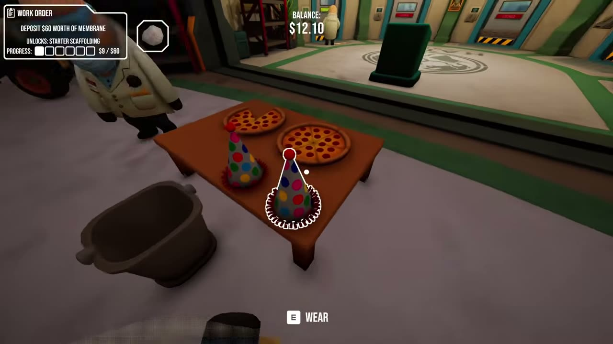
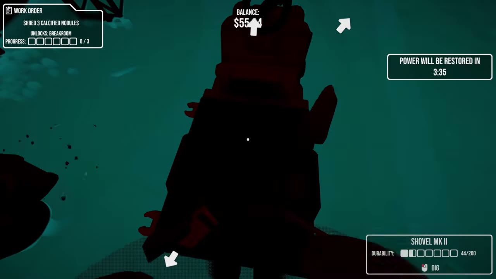
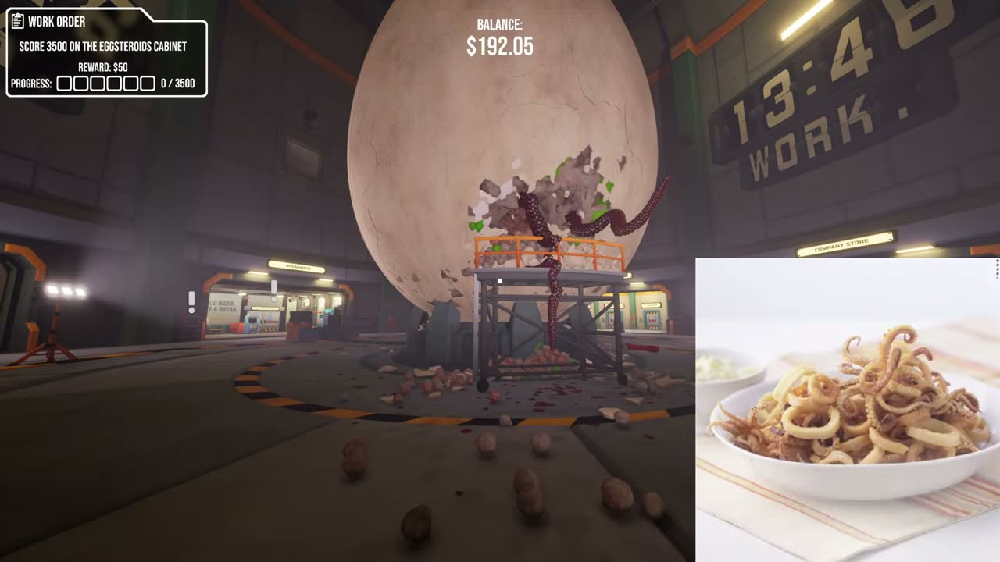
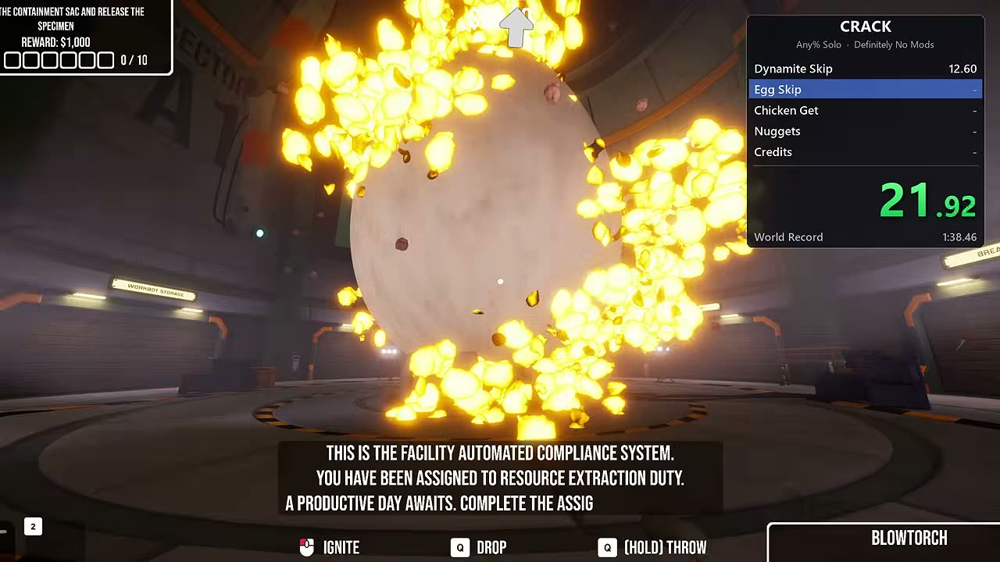
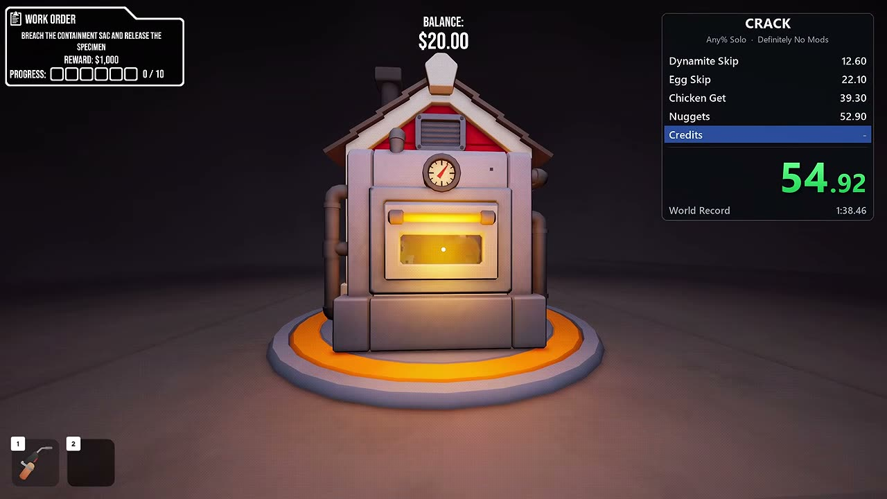

CRACK review: three-player egg cracking, then a modded speedrun

CRACK puts you in a lab with one job: crack a giant egg. Rafoli's incremental adventure came out on Steam on October 26, 2026, and it plays solo or in online co-op for up to four. You upgrade your tools and unlock hidden rooms as you go, and the egg reacts to you.
Two friends and I played this one with no mods, and we spent the session getting in each other's way. We tested the recycling shredder on a teammate. It pays cash for anything you drop in, and the employee handbook went in. After the pizza party, a teammate in a party hat took a bucket I'd bought off the shop conveyor, and later I ran a friend over with the golf cart to take his filled bucket. Then a power cut hit, and the game itself burst a pressure line and flooded the egg chamber. One friend took Top Earner on almost every shift. Near the end I made a kraken joke, and tentacles came out of the shell.


Then I went back alone for a speedrun titled "World Record Speedrun (Definitely No Mods)", using the channel's own mod tools, which mark the run unranked, so nothing went to the Steam leaderboards. A Dynamite MK III goes off, the whole shell shatters at once and chunks rain down on me. I grab the loose chicken, cook it and pack the nuggets. The overlay reading "1:38.45 NEW WORLD RECORD by 0.01 seconds" is something I added in the edit, and the game's own timer reads about five to six minutes. The end screen lists zero dig swings, zero scaffolding placed and zero explosives detonated.


The best part of CRACK is that the lab gives you everything you need to ruin a shift: a shredder, a golf cart, a shop conveyor of buckets. Watch the unmodded three-player shifts and the modded solo speedrun below.